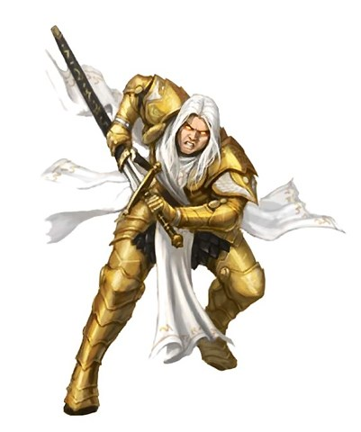
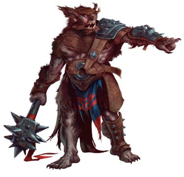
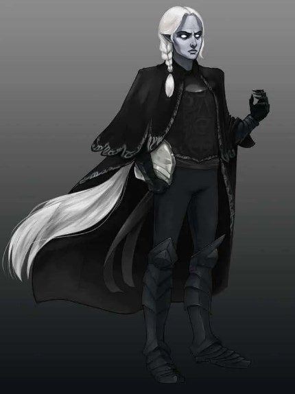

Idade: Os aarakocras atingem a maturidade aos 3 anos de idade. Comparados aos humanos, os aarakocras geralmente não vivem mais de 30 anos. Alinhamento: A maioria dos aarakocras são bons e raramente escolhem lados quando se trata de lei e caos. Altura e Peso: Aarakocra tem cerca de 1.5 metros de altura. Eles têm corpos finos e leves que pesam entre 36 e 45 Kg.
Voo: Você tem um deslocamento de voo de 15 metros. Para usar esta velocidade, você não pode usar armadura média ou pesada. Garras: Você é proficiente com seus ataques desarmados, que causam 1d4 de dano cortante em um acerto.
AASIMAR

Atributo: +2 CAR. Tamanho: Médio. Deslocamento: 6 metros, voo 15 metros. Idiomas: Common e Celestial.
Idade: Comparada aos humanos, porem videm um pouco mais. Alinhamento: Normalmente boa, mas alguns deles rejeitam sua linhagem e caem para o mal. Altura e Peso: Aarakocra tem cerca de 1.70 metros de altura. Eles têm corpos como de humanos
Portador da luz: Conhece o Truque Luz. Resistência Celestial: Você é resistente á dano Necrótico e Radiante. Visão no Escuro: Trata penumbra como luz normal e escuridão com penumbra, ambos a até 18m.
Caído
Atributo: +1 FOR. Consumo Radiante: A partir do nível 3, uma vez por dia pode liberar energia celestial por 1 minuto ou até terminar o efeito com ação bônus. Ao ativar o efeito criaturas a até 3m devem passar em resistência de CAR baseada em CAR ou ficarem Assustadas até o fim do próximo turno. Uma vez por turno causa +nível dano necrótico em um de seus ataques ou magias.
Flagelo
Atributo: +1 CON. Consumo Radiante: A partir do nível 3, uma vez por dia pode liberar energia celestial por 1 minuto ou até terminar o efeito com ação bônus. Durante o efeito emana luz brilhante a 3m e luz baixa em mais 3m. Ao final de seu turno você e criaturas a até 3m sofrem ½ seu nível como dano radiante, e uma vez por turno causa +nível dano radiante em um de seus ataques ou magias.
Protetor
Atributo: +1 FOR. Alma Radiante: A partir do nível 3, uma vez por dia pode liberar energia celestial por 1 minuto ou até terminar o efeito com ação bônus. Durante o efeito recebe deslocamento de voo 9m, e uma vez por turno causa +nível dano radiante em um de seus ataques ou magias.
ANÃO
Atributo: +2 CON. Tamanho: Médio. Deslocamento: 7.5 metros. Idiomas: Common e Celestial.
Idade: Chegam a idade adulta aos 50, vivem até os 350. Alinhamento: Normalmente Leal e Bom. Altura e Peso:Tem cerca de 1.20 a 1.50 metros de altura. Pesam aproximadamente 75kg
Ferramentas: Proficiência em um entre ferramentas de Ferreiro, Maçom ou Cervejeiro.
Lento e Firme: Deslocamento não é reduzido por armadura. Ligação com Pedra: Adiciona dobro de proficiência em História relacionado à origem de trabalhos de pedra. Resiliência: Resistência a dano de veneno e Vantagem em testes de resistência contra veneno. Treino em Combate Anão: Proficiência com machado de guerra, machadinha, martelo de arremesso, martelo de guerra. Visão no Escuro: Trata a escuridão a 18m como luz baixa, e luz baixa como brilhante.
Anão da colina
Atributo: +1 SAB Firmeza Anã: +1 PA por nível.
Anão da colina
Atributo: +2 FOR Proficiência: Armaduras leves e médias.
Anão da profundezas
Visão no Escuro Superior: Visão no Escuro 36m. Resiliência Profunda: Vantagem em testes de resistência contra ilusão e ser enfeitiçado ou paralisado.
Idioma Extra: Subterrâneo. Magia Profunda: A partir do nível 3 pode usar a opção aumentar de Aumentar/Reduzir em você mesmo uma vez por dia. A partir do nível 5 também pode usar Invisibilidade em você mesmo uma vez por dia. Essas magias são baseadas em INT, e você não pode usá-las quando sob luz solar. Sensibilidade à Luz: Desvantagem em ataque e Percepção quando você ou alvo estão em luz solar direta.
BUGBEAR

Atributo: +2 FOR; +1 DES. Tamanho: Médio. Deslocamento: 9 metros. Idiomas: Common e Goblin.
Idade: Atingem a idade adulta aos 16 anos e vivem até 80 anos. Alinhamento: Bugbears suportam uma existência dura que exige que cada um deles permaneça auto-suficiente, mesmo às custas de seus companheiros. Eles tendem a ser caóticos e maus. Altura e Peso: 1.80 e 2.40 metros de altura e pesam entre 113 e 158 Kg.
Visão no escuro: Você pode ver na penumbra a até 18 metros de você como se fosse luz brilhante, e na escuridão como se fosse luz fraca. Você não pode discernir cores na escuridão, apenas tons de cinza. Membros Longos: Quando você faz um ataque corpo a corpo no seu turno, seu alcance é 1,5 metro maior que o normal. Construção Poderosa: Você conta como um tamanho maior ao determinar sua capacidade de carga e o peso que pode empurrar, arrastar ou levantar. Sorrateiro: Você é proficiente na perícia furtividade. Ataque surpresa: Se você surpreender uma criatura e acertá-la com um ataque em seu primeiro turno de combate, o ataque causará 2d6 de dano extra a ela. Você pode usar esta característica apenas uma vez por combate.
CENTAURO
Atributo: +2 For; +1 Sab Tamanho: Médio Deslocamento: 12 metros. Idiomas: Common, e Silveste.
Idade: Os centauros amadurecem e envelhecem aproximadamente na mesma proporção que os humanos. Alinhamento: Centauros são inclinados à neutralidade. Altura e Peso: Centauros têm entre 1.80 e 2.40 pés de altura, com seus corpos equinos atingindo cerca de 1.2 metors. Ser feérico: Seu tipo de criatura é feérico, ao invés de humanoide.
Carregar: Se você se mover pelo menos 9 metros em linha reta em direção a um alvo e, em seguida, acertá-lo com um ataque corpo a corpo com arma no mesmo turno, você pode imediatamente seguir esse ataque com uma ação bônus, fazendo um ataque contra o alvo com seus cascos. Cascos: Seus cascos são armas brancas naturais, que você pode usar para fazer ataques desarmados. Se você acertar com eles, você causa dano de concussão igual a 1d4 + seu modificador de Força. Construção Equina: Você conta como um tamanho maior ao determinar sua capacidade de carga e o peso que você pode empurrar ou arrastar.Além disso, qualquer escalada que exija mãos e pés é especialmente difícil para você por causa de suas pernas. Quando você faz tal escalada, cada 30 cm de movimento custa 1 metro extras, em vez do normal 30 cm extra. Sobrevivente: Você tem proficiência em uma das seguintes perícias de sua escolha: Adestrar Animais, Medicina, Natureza ou Sobrevivência.
CHANGELING

Atributo: +2 Des; +1 Sab Tamanho: Médio Deslocamento: 9 metros. Idiomas: Common, e mais dois a sua escolha.
Idade: Os changelings amadurecem um pouco mais rápido que os humanos, mas compartilham uma vida útil semelhante – geralmente um século ou menos. Alinhamento:Changelings tendem à neutralidade pragmática, e poucos changelings abraçam o mal. Altura e Peso: Centauros têm entre 1.80 e 2.40 pés de altura, com seus corpos equinos atingindo cerca de 1.2 metors.
Metamorfo: Como uma ação, você pode mudar sua aparência e sua voz. Você determina as especificidades das mudanças, incluindo sua coloração, comprimento do cabelo e sexo. Você também pode ajustar sua altura e peso, mas não tanto que seu tamanho mude. Você pode se fazer parecer como um membro de outra raça, embora nenhuma de suas estatísticas de jogo mude. Você não pode duplicar a aparência de uma criatura que nunca viu e deve adotar uma forma que tenha o mesmo arranjo básico de membros que você tem. Suas roupas e equipamentos não são alterados por esta característica.
Você permanece na nova forma até usar uma ação para reverter à sua forma verdadeira ou até morrer. Instintos Mutantes: Você ganha proficiência com duas das seguintes perícias à sua escolha: Enganação, Intuição, Intimidação e Persuasão.
Idade: Os Draconatos amadurecem aos 15 anos, e compartilham uma vida útil semelhante aos humanos. Alinhamento:Changelings tendem à Bom Leal ou Caótico Mau. Altura e Peso: Draconatos têm mais de 1,80m. Peso médio 125kg.
Ancestralidade Dracônica: Escolha um ancestral dracônico. Suas escamas são dessa cor, sua resistência e sopro são de acordo com o elemento ligado:
Azul: Eletricidade - Dano em Linha de 1,5mts por 6mts - Save: Dex.
Branco: Frio - Cone de 4.5mts - Save: Con.
Bronze: Eletricidade - Dano em Linha de 1,5mts por 6mts - Save: Dex.
Cobre: Ácido - Dano em Linha de 1,5mts por 6mts - Save: Dex
Latão: Fogo - Dano em Linha de 1,5mts por 6mts - Save: Dex
Ouro: Fogo - Cone de 4.5mts - Save: Dex
Prata: Frio - Cone de 4.5mts - Save: Con
Preto: Ácido - Dano em Linha de 1,5mts por 6mts - Save: Dex
Verde: Fogo - Cone de 4.5mts - Save: Dex
Vermelho: Fogo - Cone de 4.5mts - Save: Dex
Resistência: Recebe resistência ao elemento de seu ancestral. Sopro: Uma vez por descanso pode fazer um sopro que causa 2d6 (resistência de DES metade, CD 8 + Proficiência + CON). Esse dano aumenta em 1d6 aos níveis: 6, 11 e 16.